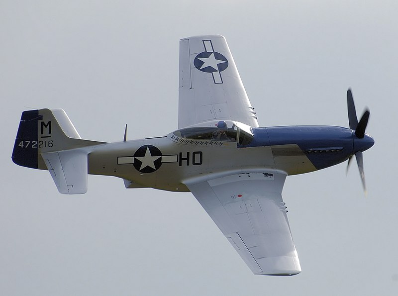
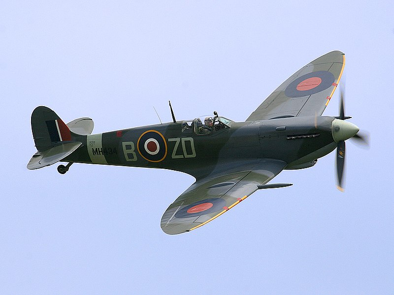
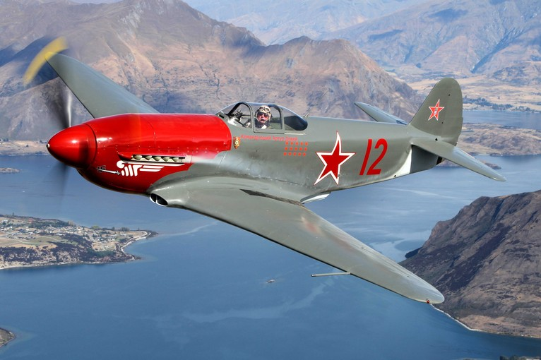
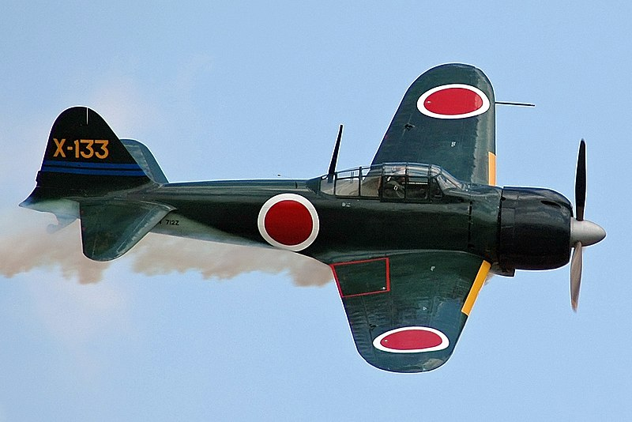

El Messerschmitt Bf 109 fue un avión de caza alemán de la Segunda Guerra Mundial, diseñado a principios
de los años 30. Fue uno de los primeros cazas realmente modernos de la época, incluyendo características
tales como una construcción monocasco totalmente metálica, carlinga cerrada y tren de aterrizaje
retráctil.
 Después de haber pasado por su bautismo de fuego en la
Guerra Civil Española, el Bf 109 permaneció en servicio hasta el nacimiento de la era de los reactores
al final de la Segunda Guerra Mundial, tiempo durante el cual fue la espina dorsal de la fuerza de cazas
de la Luftwaffe alemana. Con un motor de 12 cilindros en V invertido, el fenomenal Daimler-Benz DB601,
el Bf 109 fue complementado, pero nunca completamente reemplazado en servicio, por el Focke-Wulf Fw 190,
a partir de finales de 1941.
Después de haber pasado por su bautismo de fuego en la
Guerra Civil Española, el Bf 109 permaneció en servicio hasta el nacimiento de la era de los reactores
al final de la Segunda Guerra Mundial, tiempo durante el cual fue la espina dorsal de la fuerza de cazas
de la Luftwaffe alemana. Con un motor de 12 cilindros en V invertido, el fenomenal Daimler-Benz DB601,
el Bf 109 fue complementado, pero nunca completamente reemplazado en servicio, por el Focke-Wulf Fw 190,
a partir de finales de 1941.
North American P-51 Mustang
El North American P-51 Mustang fue un caza y caza de escolta monomotor estadounidense de largo alcance,
utilizado por las Fuerzas Aéreas del Ejército de los Estados Unidos (USAAF) durante la Segunda Guerra
Mundial y la Guerra de Corea, entre otros conflictos.

El Mustang fue diseñado en 1940 por North American Aviation (NAA) en respuesta a un requerimiento de la
Comisión de Adquisiciones del Reino Unido. La Comisión de Adquisiciones se acercó a North American
Aviation para construir cazas Curtiss P-40 bajo licencia para la Real Fuerza Aérea (RAF). En lugar de
construir un diseño antiguo de otra compañía, North American Aviation propuso el diseño y la producción
de un caza más moderno. El prototipo NA-73X se puso en marcha el 9 de septiembre de 1940, 102 días
después de la firma del contrato, y voló por primera vez el 26 de octubre.
El Supermarine Spitfire fue un caza monoplaza británico usado por la Royal Air Force (RAF) y muchos
otros países Aliados durante la Segunda Guerra Mundial. El Spitfire continuó siendo usado hasta los años
1950, tanto como caza de primera línea como en funciones secundarias. Fue producido en mayores números
que ningún otro avión británico y fue el único caza de los Aliados en producción durante toda la
guerra.
El Spitfire fue diseñado por R. J. Mitchell, diseñador
jefe de Supermarine Aviation Works (subsidiaria de Vickers-Armstrong desde 1928), como un interceptor de
alto rendimiento y corto alcance.Mitchell continuó refinando el diseño hasta que murió de cáncer en
1937, con lo cual su colega Joseph Smith se convirtió en diseñador jefe. El ala elíptica del Spitfire
tenía una sección transversal delgada que le permitía alcanzar una velocidad punta más elevada que el
Hawker Hurricane y varios cazas contemporáneos. La velocidad era vista como una cualidad esencial para
llevar a cabo la misión de defensa nacional contra los bombarderos enemigos.
El Yakovlev Yak-3 (en ruso: Як-3), conocido inicialmente como I-30, fue un caza monomotor de ala baja
fabricado por la oficina de diseño soviética Yakovlev durante la década de 1940 a partir del Yakovlev
Yak-1, y que entró en servicio en la Fuerza Aérea Soviética, con la que participó en la Segunda Guerra
Mundial, donde tuvo un buen rendimiento debido a que era más ligero y pequeño que sus rivales, y a su
alta relación peso-potencia. Años después sirvió de base para la construcción del avión de entrenamiento
Yakovlev Yak-11 y al primer caza a reacción soviético viable, els Yakovlev Yak-15.
A finales de 1941 comenzó el diseño de un caza monoplaza en
torno al nuevo motor Klimov VK-107. Los parámetros de diseño se fundaban en conseguir dimensiones y
pesos moderados, tan poca resistencia aerodinámica como fuese posible y la maniobrabilidad propia de una
máquina de combate. Debido a los retrasos provocados por el nuevo motor y a la necesidad de construir el
mayor número posible de aviones de los modelos en plena producción, el programa del Yakovlev Yak-3 no
progresó con el ritmo debido.
El Mitsubishi A6M "Zero" es un caza de largo alcance empleado por el Servicio Aéreo de la Armada
Imperial Japonesa desde 1940 hasta 1945.
El A6M fue designado como Caza Embarcado Tipo 0 (零式艦上戦闘機
rei-shiki-kanjō-sentōki?), los japoneses también utilizaban una contracción oficial de rei sentōki —caza
cero— o rei-sen, pero utilizaban más familiarmente la de Zero-sen, pues las palabras inglesa «zero» y
francesa «zéro» fueron introducidas en Japón desde finales del siglo xix, cuando el Japón de la era
Meiji empezaba a recibir ingenieros y científicos franceses e ingleses con la intención de constituirse
una industria y un ejército modernos y poderosos. Aunque el nombre en clave oficial de los Aliados era
Zeke —pronunciado
Zik—, es universalmente conocido como Zero por su designación naval japonesa.